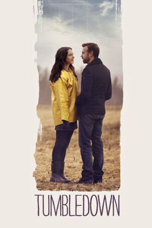
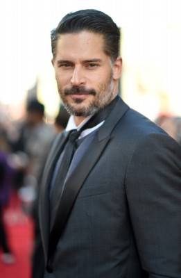
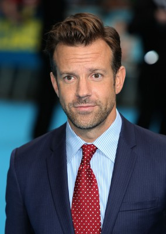
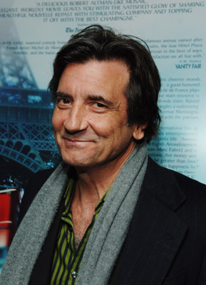
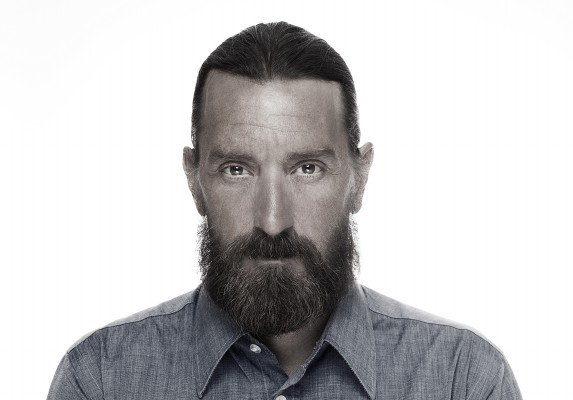
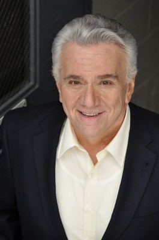

#5788 Tumbledown - Zurück im Leben
 
 IMDB-Wertung: 6.2 / 10
IMDB-Wertung: 6.2 / 10  Metascore: 0
Metascore: 0 
Hannah (Hall) is beginning to move on with her life after the death of her husband, an acclaimed musician and the subject of her latest biography, when she meets Andrew (Sudeikis), a brash writer from New York, who has a different take on her husband's life - and death. The unlikely pair must collaborate to put together the famous singer's story and begin to write the next chapter of their lives.
Jahr: 2015
Dauer: 103 Minuten
FSK:
Land: USA Studio: Starz Digital MediaTonspuren: DD5.1 - ,
Untertitel: Deutsch,
Auflösung: 1080p (1920x800) Größe: 8110 MB
Genre: Musik, Komödie, Liebe
Regisseur: Sean Mewshaw
Drehbuch: Roy Horniman
Soundtrack:
Darsteller:
 Rebecca Hall als Hannah
Rebecca Hall als Hannah- Dianna Agron als Finley
-  Joe Manganiello als Curtis
-  Jason Sudeikis als Andrew McDonnell
- Blythe Danner als Ellen
-  Griffin Dunne als
 Richard Masur als
Richard Masur als - Maggie Castle als Shannon
- Meredith Prunty als Student
- Alex Quijano als Ben
- Pepper Binkley als Girl Fan
- Mark Burzenski als College Student
- Mary-Bonner Baker als Heidi
- Gabe Gibbs als Ethan Woodcock
- Melanie Ehrlich als Bookstore Employee
- Haley Pine als Girl getting ice cream
 Bates Wilder als Metal Head
Bates Wilder als Metal Head- Zachariah Supka als Bookstore Kid
- Stanis Krista Ames als Student
- Hashim Lafond als Hofstra Student
- Graham King als Guitar Player
- Eddie Resendes als Hofstra Student
-  Steven Dougherty als Local Scruffy / Cowboy
- Matthew Delamater als Seth
 George J. Vezina als Pedestrian
George J. Vezina als Pedestrian- Eva Senerchia als Storytime Kid
- Carl 'CJ' Tempesta als Teen Party Goer
-  David Boston als Town Person , uncredited
- Rosemary Howard als Party Goer , uncredited
- Stew Replogle als Visitor at Farm Hootenanny , uncredited
 Gary Roscoe als Partygoer , uncredited
Gary Roscoe als Partygoer , uncredited- Kallie Tabor als Party Goer , uncredited
- Damien Jurado als Hunter
- Lindsay Boffoli als Ice Cream Lady
- Tierre Diaz als Student
- Josh Gunderson als Hipster
- Claire Skowronek als Megan
- Melissa Jesser als Melissa
- Emily Kokidko als Teen Party Goer
- Frank Omar als Reggie
- Caroline Cronin als Student
- John Hickson als Al
- Lewis Robinson als Scruffy Local
- Lily Gavin als Storytime Kid , uncredited
Datei: X:\2015(N-Z)\Tumbledown - Zurück im Leben (2015, FSK, 1920x800).mkv seit 22.03.2017
Festplatte: HD 2015(A-Z)
 Es gibt insgesamt 161 Filme in der Gruppe '2015(N-Z)'
Es gibt insgesamt 161 Filme in der Gruppe '2015(N-Z)'